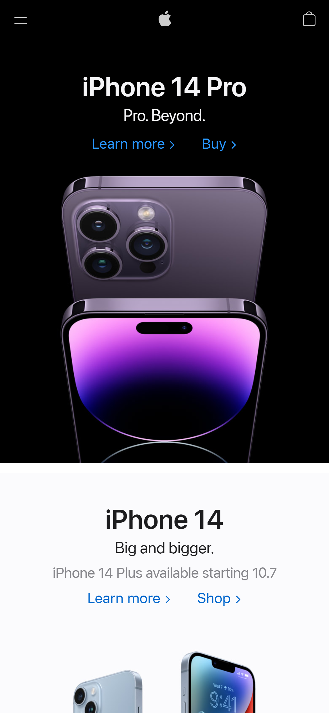
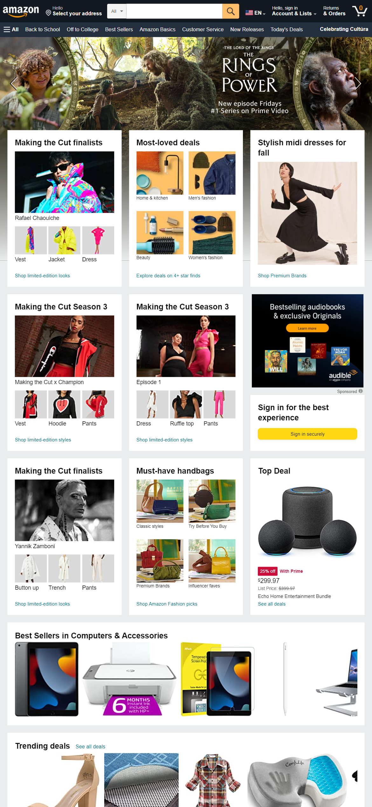
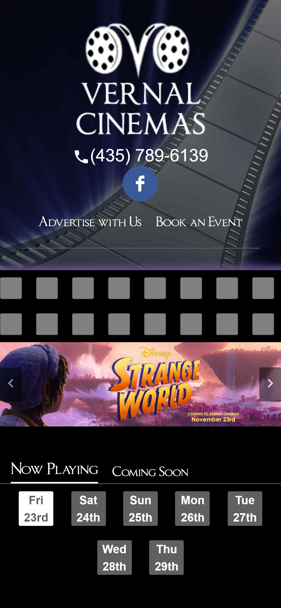

White Space
The Apple website does a good job of utilizing white space and keeping a neat design. They are not afraid of white space but use it to call attention to the content they wish to show. There is an appropriate amount of padding and margins to keep the website neat and clean.
Alignment
The alignment of the items on the amazon website is amazing. it makes scrolling through to find what you're looking for so easy. The alignment of the page keeps it simple and easy to use.
Visual Hierarchy
The visual hierarchy of this site helps focus the visiter of the site to stay focused on their purpose. First the banner of the site draws attention to the logo and name of the cinema. Then the next largest thing is the movies being played then the times. It all draws your eye in a natural way.